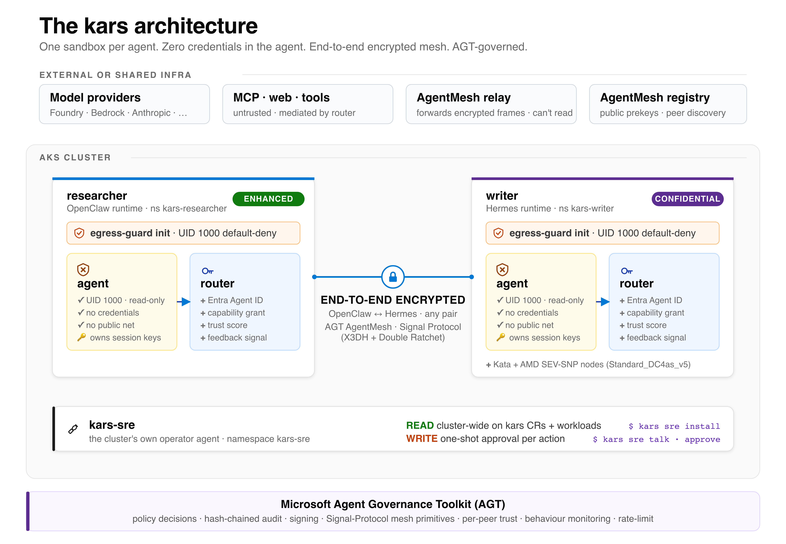

Introducing kars — the Agent Reference Stack for Azure
kars is a Kubernetes-native runtime for AI agents on Azure. It treats every agent as untrusted code: per-pod kernel isolation, zero credentials in the agent process, end-to-end encrypted inter-agent mesh, and native consumption of the Microsoft Agent Governance Toolkit. v0.1.0 ships today on AKS, on the Azure Linux family, MIT-licensed.
This builds on the foundation Brendan Burns described last month — From open source to agentic systems: a hardened Azure Linux substrate (Azure Linux 4.0 + Azure Container Linux), an open agentic stack (Agent Framework, AGT, A2A), and the Agentic AI Foundation. kars is the K8s-native runtime that composes these primitives into a single, deployable stack you can drop into AKS.
TL;DR
- What: Kubernetes operator + per-agent inference router + end-to-end encrypted inter-agent mesh, on AKS. One sandbox per agent.
- Why: agent code is partially generated at runtime by untrusted sources (prompt injection works in practice). The trust model has to be closer to running customer-submitted code than to running a service you wrote.
- How: consumes AGT for governance, runs on the Azure Linux family, opt-in AKS Pod Sandboxing (Kata + AMD SEV-SNP) is one CRD field. Eight first-class agent frameworks supported.
- Unique today: end-to-end encrypted inter-runtime messaging — agents written in OpenClaw, Hermes, MAF, LangGraph, etc. talk on the same Signal-Protocol mesh; the broker sees only ciphertext. No other K8s-native agent runtime ships this.
- Try it:
kars devruns a governed agent on your laptop in minutes (Docker by default, or a kind cluster via--target local-k8s);kars upprovisions the full stack on AKS. - Source: github.com/Azure/kars · MIT · contributions welcome.
Try it
# 1. Install the CLI (Node 22+)
npm install -g @kars/cli
# 2. Try it on your laptop. Docker by default (fast); add
# --target local-k8s to run on a kind cluster that mirrors the
# AKS layout. kars dev prompts for the runtime and model provider.
kars dev
# 3. Open a chat with your governed agent
kars connect dev-agent --localGoing to production? kars up provisions the AKS cluster, controller and your first sandbox; kars add <name> --runtime <kind> adds agents on any of the eight runtimes (openclaw, hermes, openai-agents, microsoft-agent-framework, langgraph, anthropic, pydantic-ai, byo); kars connect <name> opens the chat. Full path in the getting-started guide.
The architecture, in one picture

enhanced isolation; writer on Hermes in confidential = Kata + AMD SEV-SNP on Standard_DC4as_v5) talk to each other over the AgentMesh — OpenClaw, Hermes, MAF, LangGraph and the other adapters all share one Signal-Protocol wire format. The Signal session lives inside the agent processes — each agent owns its own session keys; the relay only forwards opaque ciphertext and cannot decrypt. The per-pod router holds the Entra Agent ID and the AGT governance the agent consults on every peer message (trust, capability, policy, audit). kars-sre is the cluster's own operator agent — same sandbox shape, but with cluster-wide read and gated writes. AGT is consumed for governance.Why this design
Three convictions shaped kars. Each is opinionated; each rejects an assumption I see repeated in the agentic-AI conversation.
1. The agent is untrusted code, not a microservice.
An agent's instructions are partially generated at runtime by the model output, the tool response, the previous turn's context, an MCP server you do not control. The threat model is closer to running customer-submitted code than to running a service you wrote. The agent process must therefore hold no secrets, have no ambient network reach, and be isolated at the kernel — not just at the network policy.
2. Governance is the workload, not a wrapper.
Policy, audit, trust scoring, rate limiting cannot be bolted on later. The right move is to consume a real governance engine — for us that is AGT — through stable provider seams from day one. kars's AGT Boundary document says explicitly what kars never builds: no custom Signal primitives, no standalone audit chain, no parallel trust engine. Overlap is treated as a bug.
3. Inter-agent messaging needs broker-out-of-trust-set, not just A2A.
The A2A protocol standardises message shape; it does not, by itself, remove the broker from the trust set. kars uses an end-to-end Signal-Protocol encrypted mesh where the relay routes ciphertext and cannot decrypt — and works across runtimes (OpenClaw, Hermes, MAF, LangGraph, …) on the same wire format. The structural difference from a service mesh is the same as HTTPS-through-a-proxy versus PGP-encrypted email. Both are valid; they are not equivalent.
Spotlight — confidential agents in one CRD field
Some agentic workloads — financial research, clinical, sovereign deployments, classified evals — need more than a hardened namespace. They need a separate kernel per workload, attestable VM-level isolation, and a barrier between the agent and the host. kars wires this into AKS Pod Sandboxing.
What you write
apiVersion: kars.azure.com/v1alpha1
kind: KarsSandbox
metadata:
name: financial-research
spec:
runtime:
kind: OpenClaw
isolation: confidential # standard | enhanced | confidential
# └─ confidential = Kata + AMD SEV-SNP, scheduled on Standard_DC4as_v5What the controller does
- Sets
runtimeClassName: kata-vm-isolationon the pod spec (controller/src/reconciler/mod.rs:87). - Adds a
nodeSelectorfor thesandbox-katanodepool. - Schedules onto a Kata nodepool with
workloadRuntime: KataMshvVmIsolation, AMD SEV-SNP capable VMs (Standard_DC4as_v5),enableEncryptionAtHost: true— auto-provisioned by Bicep or bykars add <name> --isolation confidential. - Preserves all the other kars hardening (read-only rootfs, drop-ALL caps, default-deny egress, kars-strict seccomp).
What you get
- A dedicated lightweight VM per pod via Kata Containers on the Microsoft Hyper-V Hypervisor with the Cloud Hypervisor VMM. Separate kernel per workload.
- AMD SEV-SNP confidential computing: hardware-backed memory encryption and remote attestation, designed to protect guest memory from the host.
- A working example at
examples/confidential-agent/.
The trust boundary becomes: the workload runs in its own hypervisor-protected VM with hardware attestation; the host kernel is not in the trust set. Everything else about the agent — framework, model, policy bundle, mesh — works exactly the same. One field changes.
What v0.1.0 ships
| Layer | What's enforced today | Why it matters |
|---|---|---|
| Identity | Per-sandbox Microsoft Entra Agent ID via auth-sidecar (--mesh-trust=entra), or cluster Workload Identity in anonymous mode. No long-lived secrets on disk. | Each agent is an addressable principal in Entra. Audit logs name the sandbox. |
| Egress | iptables UID-1000 default-deny, K8s NetworkPolicy default-deny, router L7 allowlist on every CONNECT, OISD + URLhaus blocklist (daily refresh), EgressApproval CRD for time-boxed exceptions. | Compromised agent code has no socket to the open internet. |
| Container shape | Read-only rootfs, drop-ALL caps, non-root, no privilege escalation, kars-strict seccomp (175 allowed / 41 explicit-deny), Landlock. Optional Kata + AMD SEV-SNP via spec.isolation: confidential. | Kernel surface minimised; optional hypervisor isolation per pod. |
| Governance | AGT consumed through four provider traits: PolicyDecisionProvider, AuditSink, SigningProvider, MeshProvider (agentmesh = "4.0.0"). Hot-reloaded policy, hash-chained audit, per-peer trust, behaviour monitoring, rate-limit. | kars does not reimplement governance. Gap-closing PRs upstreamed: #2090, #2659, #2719. |
| Mesh | End-to-end encrypted inter-agent messaging. Signal Protocol session in the agent process; router WS-bridges opaque ciphertext. Cross-runtime Hermes ↔ OpenClaw exercised on every push. | The relay is not in the trust set. |
| Runtimes | Eight first-class adapters: OpenClaw, Hermes, OpenAI Agents, MAF (Python), LangGraph (Py + TS), Anthropic Claude Agent SDK, Pydantic-AI. Documented BYO contract. | Multi-framework adoption path. Switching is a one-field change. |
| A2A | Public A2A gateway with mTLS-pinned X-A2A-Agent-Subject for cross-org inbound. In-binary AgentCard JWS verifier is library-complete; axum layer wiring is on the roadmap. | Foreign agents over an open standard. |
| Supply chain | cosign keyless OIDC signatures + SPDX-JSON SBOM per image; Trivy + cargo-deny + RustSec advisory audit on every dependency-touching PR. | Verifiable artifact provenance. |
Six end-to-end use cases are shipping and exercised by CI: kars-native OpenClaw on AKS, any-OpenClaw → kars cloud offload, kars ↔ kars mesh, multi-runtime hosting, A2A federation across organisations, and migration from kagent or sigs/agent-sandbox. See docs/use-cases.md.
The honest scope statement — when kars is not for you
No tool is right for every situation. Here's an honest list of where kars probably isn't the call:
- Single agent, single user, single team, no adversarial-code threat model, no scale. Use a serverless function. Save yourself the operator overhead.
- Pure cluster-edge LLM traffic governance, no per-agent isolation requirement. Adopt agentgateway directly. It's the right tool for that job; kars composes with it, not against it.
- No Kubernetes substrate. If you operate on bare VMs or pure serverless, kars has no target there today.
None of this should stop you from trying it, though. kars dev brings the whole stack up locally — either as a plain Docker container or a kind cluster that mirrors the AKS layout — so anyone can play with the sandboxing, the encrypted mesh, and the governance on a laptop before deciding whether it belongs in production. The "not for you" list is about where it earns its keep, not about who's allowed to kick the tyres.
Note that single-framework shops still benefit from kars at scale — the per-pod kernel isolation, per-sandbox Entra Agent ID, audit chain, and K8s-native lifecycle have nothing to do with multi-runtime support. Multi-runtime is one of the seven things kars does well, not the reason kars exists.
How kars fits the broader open agentic stack
It's a fair question, so here's the honest version: kars is a consumer and composer of the open primitives, not a competitor to them. The governance layer is the clearest example — kars doesn't reinvent policy, audit, signing, or the encrypted mesh. It plugs into Microsoft's Agent Governance Toolkit through four stable seams (mesh, policy, audit, and signing; the mesh runs on AGT's agentmesh = "4.0.0" crate), and when we hit a gap we fix it upstream rather than fork — that's what PRs #2090, #2659 and #2719 were. The Microsoft Agent Framework already runs as a first-class kars runtime, and A2A is live as an inbound gateway with an mTLS-pinned subject for cross-org traffic.
This space is young and moving fast, and a lot of good work is happening in the open — Kubernetes SIG's sigs/agent-sandbox, kagent, agentgateway. Our stance is simple: move at pace now, align upstream over time. Today kars can already meet that work where it is — kars convert translates a sigs/agent-sandbox manifest into a KarsSandbox, and kars migrate from-kagent does the same for a kagent resource — and where a project is complementary rather than overlapping, like agentgateway sitting at the cluster edge, kars composes with it instead of replacing it. The long-term goal is genuine convergence on the shared open primitives, not a parallel stack. Underneath it all, the substrate is the Azure Linux family (ACL and AL4 distroless as they reach AKS-stable), and the plain Kubernetes baseline — Pod Security Admission, NetworkPolicy, seccomp, sidecars — is a hard requirement we never replace.
What's planned
A few things high on the near-term roadmap:
- Per-agent Autonomy Tiers (1..5) with default policy bundles — closes the uniform-governance failure mode.
- Multi-cloud LLM providers + native guardrails (Anthropic, Bedrock, Vertex, Ollama, vLLM; Bedrock Guardrails, Model Armor, OpenAI Moderation).
- Per-team virtual keys + unified action-cost ledger (model + tool + MCP + mesh + spawn) with a Grafana dashboard.
KarsKillSwitchCRD + behavioural drift detection + SLO→AGT-quarantine — one-CRD emergency pause; AGT does the actual termination.- Developer experience layer:
KarsRecipe+KarsTaskCRDs, browser conversation ingress, Web UI.
Come build with us
The codebase is at github.com/Azure/kars, MIT-licensed. The most useful contributions would be:
Where we want help
- Additional runtime adapters — CrewAI and Semantic Kernel particularly.
- A2A interop (the structured handshake from AgentMesh to external A2A peers).
- Behavioural-drift detection over the mesh + tool-call telemetry.
- Per-agent developer ingress for in-cluster chat / sessions / artifact retrieval.
- OWASP Agentic AI Top 10 and NIST AI RMF mapping artifacts.
- GKE / EKS deployment validation.
- Security review and red-team scenarios.
Some invariants are non-negotiable
- Credentials stay out of the agent process.
- The inference router stays in the pod.
- Inter-agent encryption remains end-to-end (the broker never enters the trust set).
- AGT primitives are consumed, not duplicated — see AGT Boundary §4.
- No mocks, stubs, or TODO placeholders in production code.
Everything else is open.
If you're evaluating how to take agentic AI from pilot to production on Kubernetes, I'd value the conversation. Open an issue or discussion on the repository. The next 18 months of agentic AI will be decided less by model quality and more by production governance. I think the answer should be open source, K8s-native, and aligned with the upstream landscape. That's what kars is.